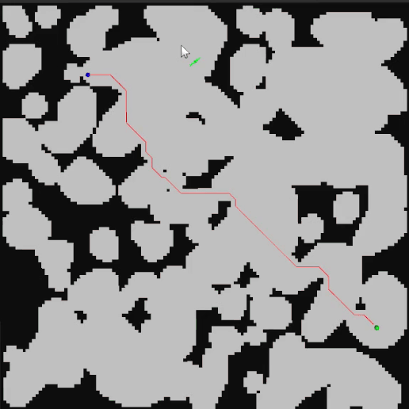

Danya Kogan

A-Star Navigation
In this project, I used C++ and ROS to write my own implementation of an A-Star navigation algorithm, as well as cavern generation using cellular automata. To visualize my generated map, as well as navigation paths, I used RViz.
The purpose of this project was to improve my understanding and experience with ROS and C++, which are tools I had little experience with outside of academic coursework.
The purpose of this project was to improve my understanding and experience with ROS and C++, which are tools I had little experience with outside of academic coursework.
Map Generation
In this project, I used Python and Pygame to make my own implementation of the Wave Function Collapse algorithm.
This project was done purely for fun -- I am very interested in map and terrain generation.
This project was done purely for fun -- I am very interested in map and terrain generation.